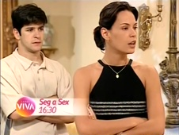

Por Amor
| reprisada de | 19/05/2010 a 08/02/2011 |
|---|---|
| em 190 capítulos (1 pulo) | |
| frequência | segunda-feira a sexta-feira |
| faixa | quatro e meia da tarde |
| horário alternativo | n/a |
Drama contemporâneo escrito por Manoel Carlos, exibido originalmente entre 1997 e 1998 na faixa das oito da noite. A protagonista entra em forte dilema ético ao trocar, na maternidade, o recém-nascido filho de sua filha mais velha, falecido em um mal súbito horas após o parto, pelo seu recém-nascido que sobreviveu, posto que mãe e filha deram à luz no mesmo dia. A atitude desesperada entremeia os conflitos desta que foi a primeira novela da faixa das 16h30 do Viva, voltada, àqueles tempos, para obras de enredos, para além de únicos e marcantes, bastante ponderosos.
A reprise ficou marcada pelo pulo do capítulo nº 142-A, onde acontece o julgamento do personagem Nando (Eduardo Moscovis), que deveria ter sido reprisado em 03/12/2010, uma sexta-feira. Em seu lugar, a exibição foi direto para o capítulo nº 143. Não houve reposição como em outras situações de problemas técnicos ocorridas nos primeiros meses de atividade do canal, apesar dos apelos realizados pelos fãs à época em redes como o Orkut.
Outra particularidade da exibição foi a troca das versões curtas das vinhetas de abertura e encerramento da novela na maioria dos capítulos em que isso originalmente aconteceu, em favor das versões integrais dessas composições. Com isso, quase todos os encerramentos com as canções da trilha internacional de Por Amor, iniciados em fevereiro de 1998 - outubro de 2010 no Viva - foram omitidos da reprise.
Vitrine do cotidiano das grandes cidades no final dos anos 1990, com uma direção competente e personagens inesquecíveis, Por Amor demonstrou-se vigorosa mesmo em um canal estreante e em fase de solidificação de público: em agosto de 2010, Por Amor já era a maior audiência do canal Viva. Em novembro, figurava no ranking dos 10 programas mais vistos da TV paga em geral. A reta final da trama, já em 2011, fez do Viva o líder de audiência no target de mulheres 35+.
Até dezembro de 2011, as reprises da tarde não tinham exibições alternativas na madrugada. Dessa maneira, Por Amor foi exibida do início ao fim sem uma 2ª opção para o telespectador que perdesse um capítulo. Ao longo da reprise, a faixa de exibição de Por Amor passou a contar com o apoio da marca Embelleze.
Por Amor deu lugar, em fevereiro de 2011, a O Rei do Gado. A confirmação da reprise veio em novembro de 2010.
Por Amor foi a primeira novela a ser exibida no Viva em mais de uma ocasião: em 2017, ela retornou ao canal, dessa vez na faixa noturna de novelas (inaugurada em outubro de 2010, por Vale Tudo).
chamadas
"Não importa onde; não importa quando; não importa como. O importante, é viver por amor."
Uma nova chamada promovia a novela, a partir de agosto de 2010: "Dizem que ele é o mais nobre dos sentimentos. Mas, até aonde podemos chegar por amor?"

Em dezembro de 2010, os novos rumos da trama guiavam a chamada vigente da novela. Também por volta dessa época, um comercial destacando palavras do tema de abertura da novela e sua relação com a história passou a ser veiculado.
Por Amor passou a ser anunciada em fase de "últimas semanas" ao final de janeiro de 2011, embalada pelos acontecimentos de sua reta final.
- 
Em 08/02/2011, uma terça-feira, a reprise de Por Amor chegou ao fim.